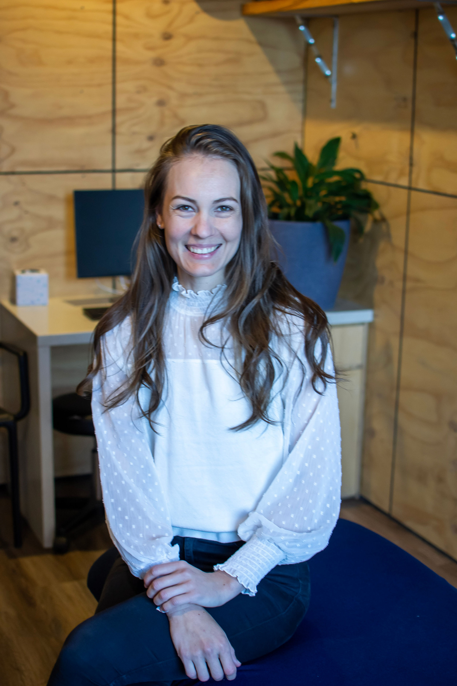
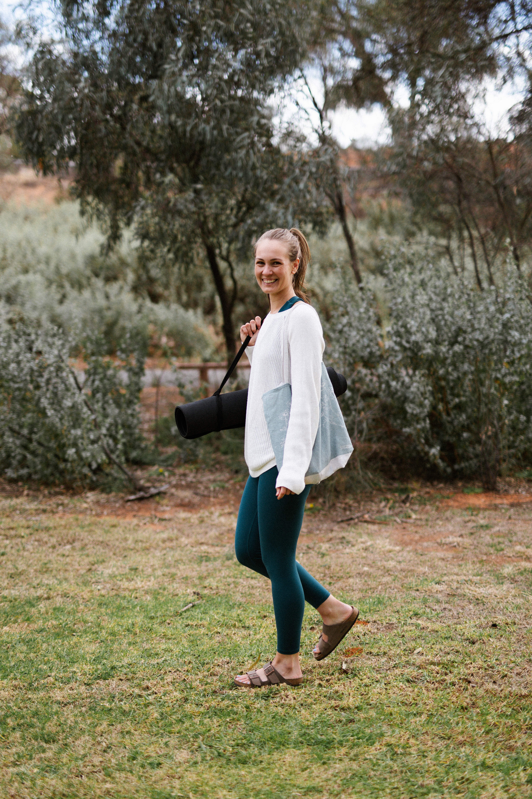

Stop relying on social media, late night Googling and hope. Fertile Ground gives you an individualised plan and practitioner guidance well in advance of trying, so when the window opens, you're not guessing.

When women come to me preparing for pregnancy, I see the same pattern again and again: bloods that come back "normal," symptoms brushed aside, and a vague instruction to just relax and let it happen. That's not enough when there's this much you can actually work with.
Fertile Ground exists so you're not guessing. We look properly at your gut, your hormones and your vaginal microbiome, build a plan around what we find, and work through it together over 12 weeks, so you walk into trying feeling prepared rather than hopeful.
Andrea
For most women, the hard part before conception isn't getting pregnant. It's not knowing whether your body is ready.
Preparing for pregnancy is one of the most important health transitions a woman will experience. Yet many women begin trying while still dealing with bloating, digestive discomfort, recurring thrush or BV, irregular cycles, fatigue or nutrient deficiencies they've been told are "normal."
You may wonder whether your gut health is affecting your hormones. You may have tried diets, supplements and advice online without understanding what's actually driving things. Or you simply want to walk into pregnancy knowing you've done everything you could to prepare.
Fertile Ground was built to close that gap: a structured, individualised, practitioner guided process, starting with real data instead of guesswork.
These are the same foundations that shape your cycle, energy and long term health, whether pregnancy is next month or a few years away.
Digestion, inflammation and nutrient absorption underpin hormone production and how well your body can support a future pregnancy.
Cycle regularity, ovulation and hormone patterns are tracked and supported, not just assumed "normal" because bloods came back clear.
Recurring thrush, BV or imbalance are investigated and treated, since vaginal health plays a direct role in fertility and pregnancy outcomes.
Not planning to conceive right now, or not sure it's on the cards at all? I'm here to support you as well. See how we can work together.
Built on Andrea's clinical specialty in women's preconception health, with a track record in cycle regulation, hormone balance and nutrient repletion before conception.
A full preconception blood panel and functional review, plus gut and vaginal microbiome testing, so your plan starts with real data, not guesswork.
A targeted supplement protocol and nutrition plan built directly around your labs and microbiome results.
Cycle tracking and hormone optimisation, with your plan evolving in regular consultations as your body responds.
Final adjustments and a clear roadmap for trying to conceive, to carry with you into the months ahead.
"By the end, the goal isn't more information. It's that you feel confident you've addressed the key foundations known to influence reproductive health."
Full terms are below. Nothing hidden, no surprises partway through.
No. Many women join 3 to 12 months before they plan to start trying, which gives the program time to do its work: investigating, resetting and regulating before the trying window opens.
That's a great reason to join. The investigation phase looks beneath the surface. Symptoms aren't required for there to be foundations worth strengthening before conception.
Your plan is built around your existing diagnosis and history, not in spite of it. The testing and consultations help tailor the protocol specifically to what you're managing.
Bring it with you. We'll review what you have, identify what's missing, and build your plan from the fullest possible picture rather than starting again from scratch.
Most participants are prescribed a targeted supplement protocol based on their labs, though this is individualised. Herbal medicine and supplements are charged separately to the program fee.
Outside of scheduled consultations and group sessions, most of the work is built into daily life: meals, supplements and cycle tracking, rather than requiring extra set aside time.
That's still a valid reason to start. Many of the foundations this program addresses, like gut health, hormone balance and nutrient stores, take time to shift, so earlier preparation gives better results.
No program can guarantee conception, and this one doesn't either. What it does is address the key foundations known to influence reproductive health, so you move forward informed and prepared rather than guessing.
This program runs for 12 weeks from the start date of the group program. All consultations, testing and inclusions are scheduled within this timeframe.
Payment is required prior to commencement. Payments are not refundable, as testing, resources and consultation time are allocated once the program begins. Clients may pay in full or via an agreed payment plan.
Payment plans are a contractual agreement and must be completed in full, even if a participant chooses to discontinue the program before completion.
Appointments must be rescheduled or cancelled with at least 24 hours' notice. Missed appointments without sufficient notice will be forfeited and may not be rescheduled.
This program includes gut microbiome and vaginal microbiome testing. These tests are an essential part of the program and guide your personalised treatment plan.
Herbal prescriptions and practitioner grade supplements are not included in the program price and are charged separately if prescribed.
The program includes access to a private community space, designed to provide additional support and shared learning, not to replace individual consultations.
This program is designed to support preconception health and optimise the body in preparation for pregnancy. Individual results will vary, and participation does not guarantee conception. This program does not replace medical care.
Get in touch to check availability and ask anything that's still unclear.
